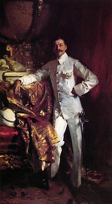
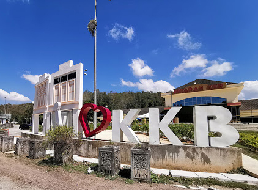

| HISTORY OF KUALA KUBU BHARU | |
|  | Kuala Kubu Bharu which was initially known as Kuala Kubu was placed in the first British Resident Administration which was President Frank Athelstane Swettenham, followed by J.P Rodger and Edward Maxwell. At that time, Kuala Kubu became the gateway to Negeri Pahang. Due to the great flood that hit, the British moved their administrative center to Kuala Kubu Bharu on May 6, 1931. |
|  | In 1975, the Hulu Selangor District Council was established which was responsible for administering and making changes in the areas under its care, especially Kuala Kubu Bharu. Many changes and modifications have been made over time for the comfort and convenience of the residents. The formerly quiet town of Kuala Kubu Bharu has now changed into a cheerful, clean and beautiful town with a refreshing landscape. On January 15, 1994, the Administrative Office of the Hulu Selangor District Council which used to be located in the former Pasar Lama in Kuala Kubu Bharu town was also moved to a more spacious and comfortable area. The office located on Jalan Bukit Kerajaan was inaugurated by Y.A.B Tan Sri Haji Muhammad Haji Muhd Taib, Selangor Menteri Besar at that time. |